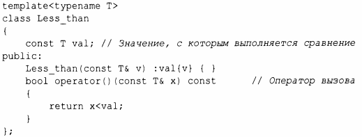
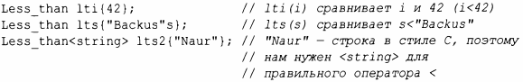
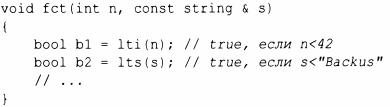
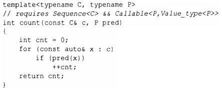
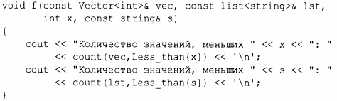

⇐6.3.1 Шаблоны функций 6.3.3 Лямбда-выражения⇒
Одной особенно полезной разновидностью шаблона является функциональный объект (иногда называемый функтором), используемый для определения объектов, которые могут быть вызваны с использованием синтаксиса вызова функций. Например:
Функция operator () реализует оператор "вызова функции" или просто "вызова" - (). Можно определить именованные переменные типа Less than для некоторых аргументов типа:
Такой объект можно вызвать так же, как функцию:
Такие функциональные объекты широко используются в качестве аргументов алгоритмов. Например, можно подсчитать количество вхождений встречающихся значений, для которых предикат возвращает значение true:
Предикат - это нечто, что может быть вызвано для возврата значения true или false. Например:
Здесь Less than{х} создает объект типа Less _ than<int>, оператор вызова которого выполняет сравнение со значением int, переданным в х; Less_than{s} создает объект, который выполняет сравнение со строкой s. Красота этих функциональных объектов заключается в том, что они хранят значение, с которым выполняют сравнение. Нам не нужно писать отдельную функцию для каждого значения (и каждого типа), и не нужно вводить неприятные глобальные переменные для хранения значений. Кроме того, для такого простого функционального объекта, как Less_than, компилятор легко выполняет встраивание, а потому вызов Less_than оказывается намного эффективнее, чем косвенный вызов функции. Возможность хранения данных и эффективность делают функциональные объекты особенно полезными в качестве аргументов алгоритмов.
Функциональные объекты, используемые для указания смысла ключевых операций общего алгоритма (например, Less_than для count()),часто называются объектами стратегии (policy objects).